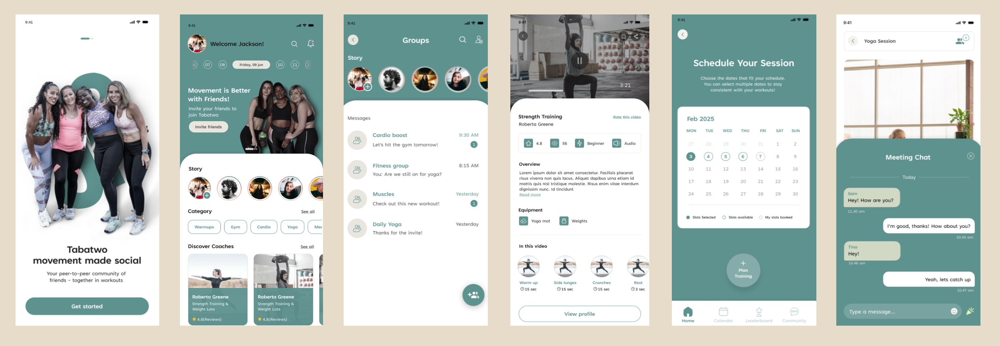

Tabatwo — defining the core UX of a social fitness platform
Tabatwo helps people train together, through live instructor-led sessions or shared workouts with friends. I joined during a critical phase, as core features were being defined and validated ahead of a wider rollout.

The challenge
Users struggled to understand the app's value early on. Booking sessions and starting workouts were high-friction; social features felt disconnected from the main experience; and navigation and language were inconsistent between areas. Each of those chipped away at trust and motivation — in a product whose whole premise is sustaining motivation.
My role
- Led design of the core features: social workout experiences, custom sessions and workout playback, instructor booking and scheduling.
- Defined user flows and functional requirements before any visual design.
- Planned and moderated usability testing with five users aged 21–68, focused on onboarding and the core flows.
- Synthesised findings into prioritised themes, ranked by impact and frequency.
- Worked closely with product and engineering to keep designs feasible and validated.
The sequencing mattered here. Flows and requirements came first, deliberately, so that testing examined whether the concept worked rather than whether people liked the visual design.
Testing
Five participants aged 21 to 68 — a deliberately wide range for a fitness product, since the social premise only holds if it works for people who are not already confident in a gym. Sessions concentrated on onboarding and the core journeys, and findings were grouped into themes ordered by how much damage each did and how often it occurred.
Recommendations
Clarify the main offering so the value is legible in the first minute. Simplify onboarding. Streamline booking. Improve the workout session experience itself. And integrate the social features meaningfully into the core journeys rather than bolting them on beside the workout.
That last point was the substantive one: the social layer was the product's differentiator but sat parallel to the main experience rather than inside it.
What stood out most was Andrea's ability to balance user experience thinking with practical execution. She helped us clarify fundamental product concepts that became central to our platform's direction. I would gladly work with Andrea again.
Mariano Alesandro — Co-Founder & CTO, Tabatwo